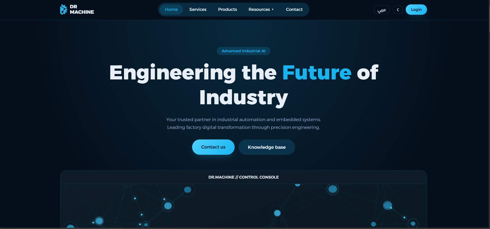
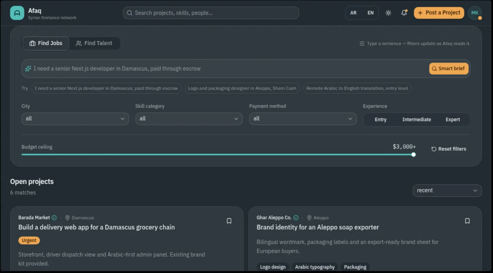
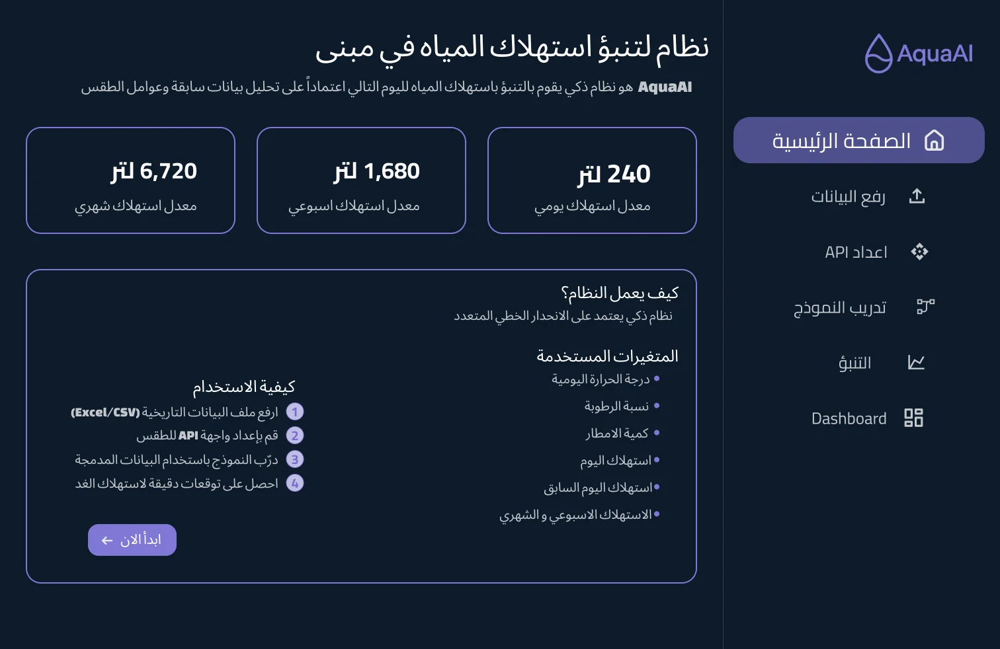
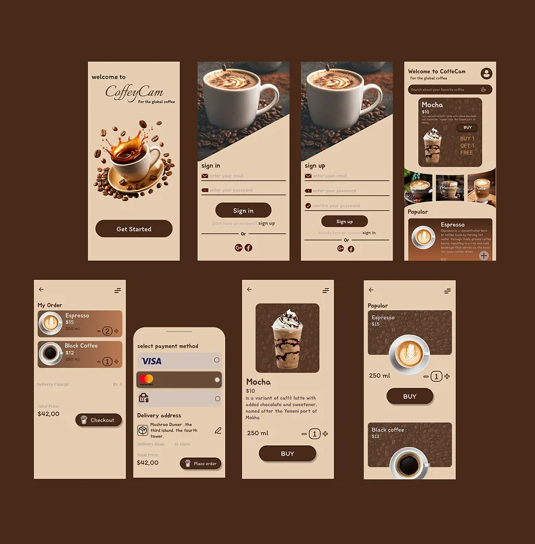
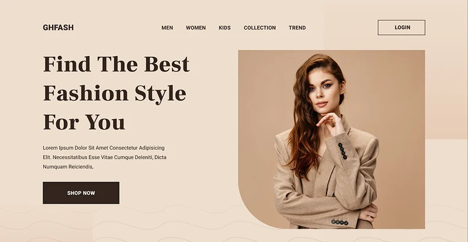

Who I am
About
Great design is invisible. It simply feels right.
I'm Ghina Alazmeh,a software engineering graduate, currently studying computer techniques at the Applied College, with hands-on experience in UI/UX design. I work in Figma, designing responsive interfaces and the user flows behind them.
My approach combines analytical thinking with creative exploration: every pixel has a purpose, and every interaction tells a story. My engineering grounding in object-oriented programming and databases means the designs I hand over are built to be built.
- EducationB.Sc. Software Engineering
4th Year Student, Computer Techniques | Applied College - ToolsFigma — design, components and interactive prototypes
- FocusUI design · UX · user flows · responsive web and mobile
- LanguagesArabic · English — interfaces in both directions
Selected projects
Work
Four products, four visual languages: each palette is drawn from what the product is about.




What I bring
Skills
UI Design
Clean, consistent interfaces for web and mobile, with colour, type and spacing chosen for the product and its users.
UX & User Flows
Mapping how people move through a product, from the first screen to the goal, before a single pixel is polished.
Prototyping in Figma
Clickable Figma prototypes that let clients and developers try the product before it is built.
Responsive Design
Layouts that hold together from a phone to a wide desktop screen.
Engineering Background
Object-oriented programming and databases: designs that respect how software is really built, and clear hand-offs.
Arabic-first & RTL
Bilingual interfaces that work right to left as naturally as left to right, as in Afaq and AquaAI.
From idea to prototype
Process
-
Understand
Who the product is for and the problem it has to solve.
-
Map the flows
The paths people take, screen by screen, until the structure is clear.
-
Design the interface
Colour, type and components, with a palette drawn from the subject.
-
Prototype & hand off
A clickable Figma prototype, ready to test and to build.